1440 × 900
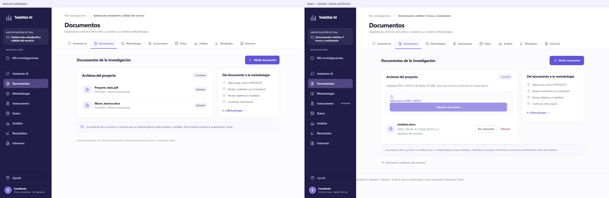
Entrega local para revisión visual. Sin publicación, push, merge ni rebase. La aceptación final corresponde a Melissa.
Mockup aprobado a la izquierda; React con FastAPI/SQLite reales de QA a la derecha. Datos exclusivamente sintéticos. No se utiliza Qwen3. Las imágenes comparativas conservan el viewport original de cada lado, sin redimensionarlo en el archivo; el navegador puede reducir la imagen para verla en esta galería.
Carga y consulta reales. La API no incluye el estado de extracción en el listado: se muestra «Por consultar» hasta consultarlo. El área de carga y las acciones reales añaden altura respecto a la maqueta.

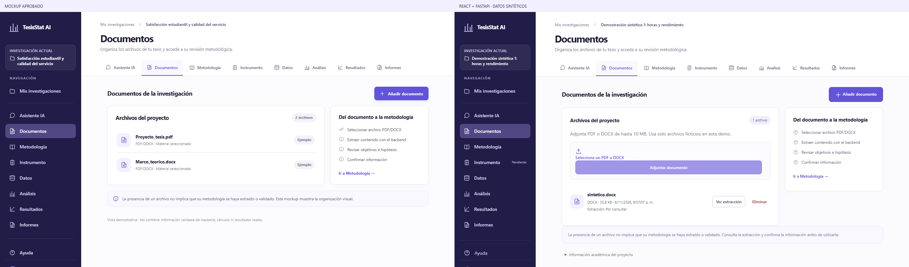
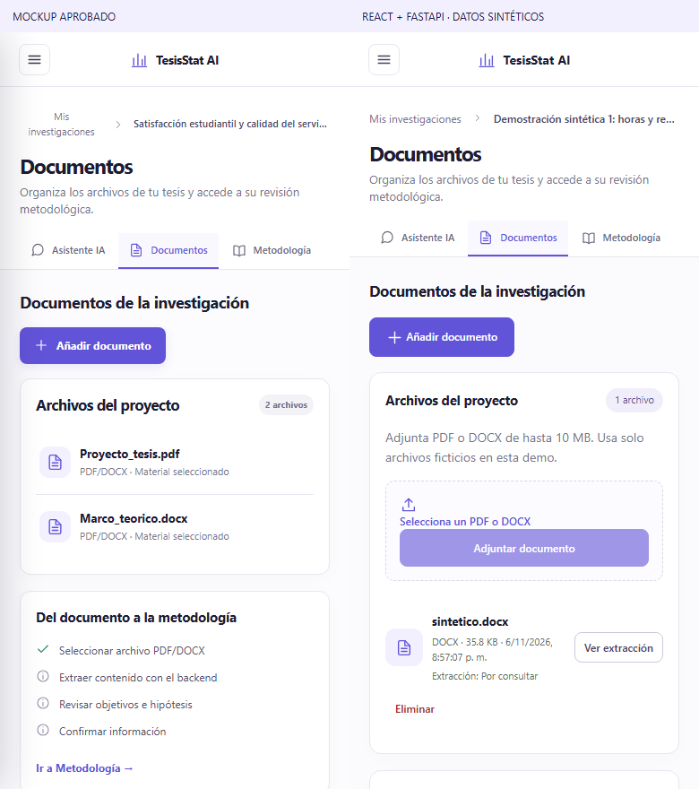
Lectura por Objetivos, Variables y dimensiones e Hipótesis. El editor y la confirmación permanecen explícitos; las advertencias de campos pendientes son datos reales y ocupan espacio adicional.
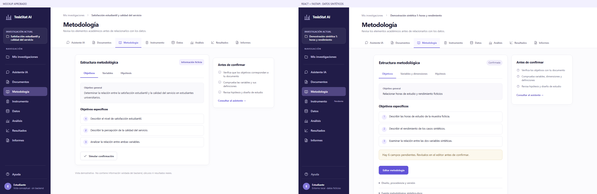
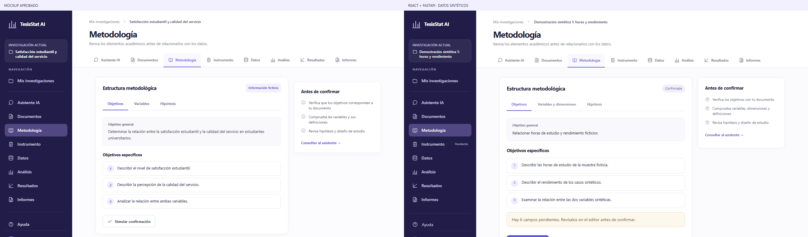
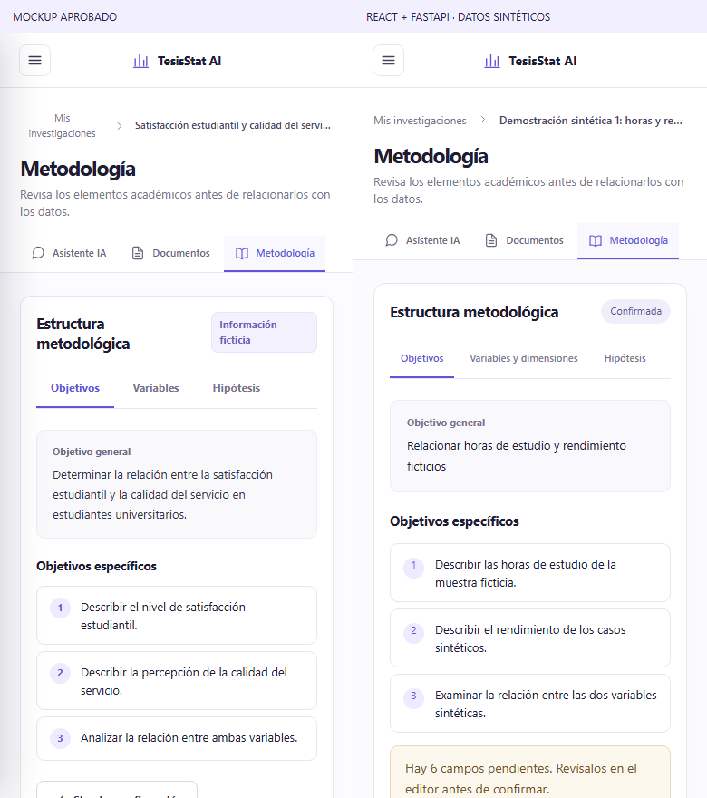
Se conserva la composición y la ayuda académica, con un estado pendiente honesto. La estructura ficticia de ítems del mockup no se incorpora: no existe un servicio real de interpretación del instrumento.
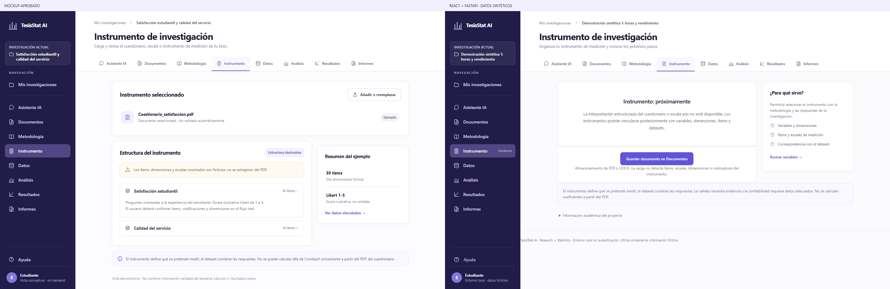
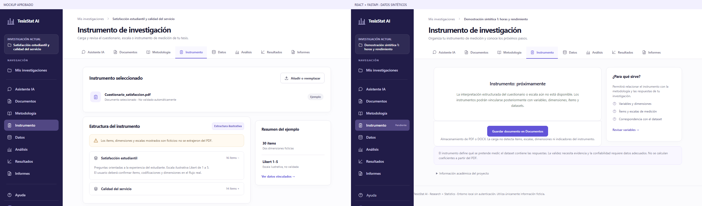
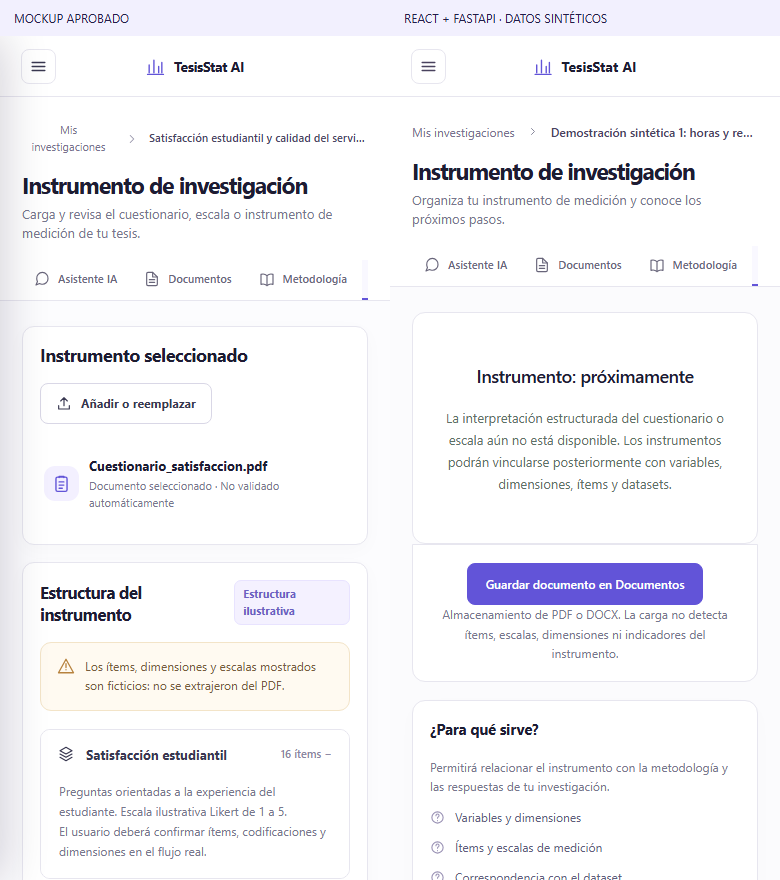
Archivo activo, tabla y tres vistas reales. Correspondencia se gestiona en las vinculaciones de Análisis. La carga de otro archivo se despliega al seleccionar un archivo; procedencia y administración están bajo demanda.
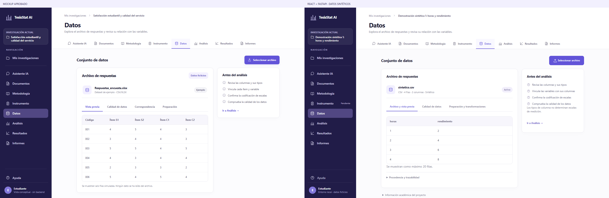
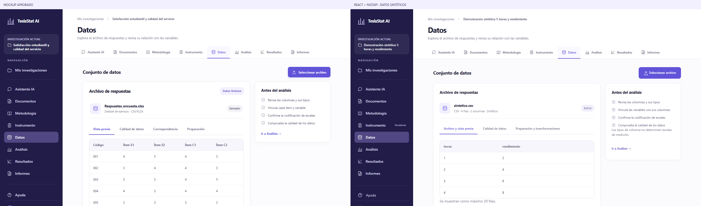
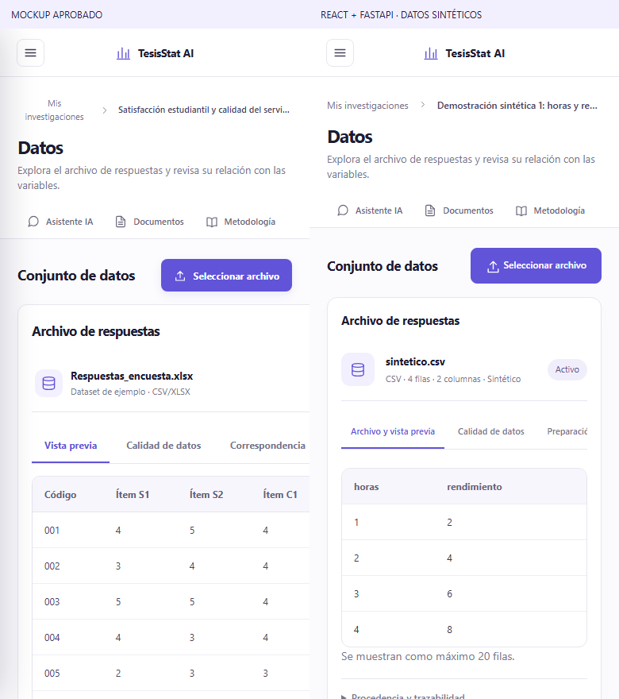
Tres etapas obligatorias: Preparación, Plan estadístico y Ejecución. La comparación muestra el plan del backend; no se copia la técnica ilustrativa del HTML como técnica predeterminada.
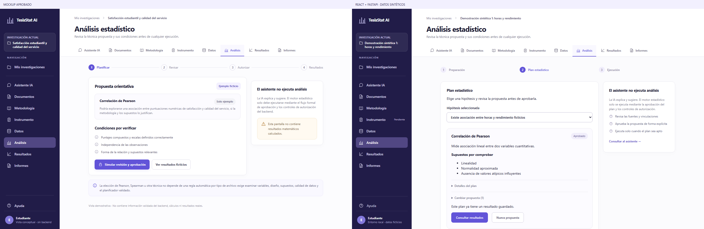
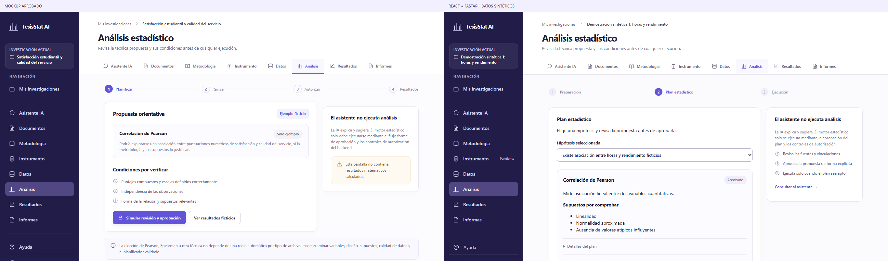
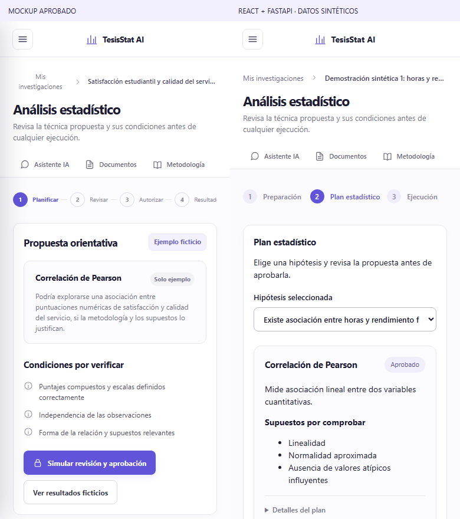
Historial seleccionable, métricas, interpretación y gráficos reales autorizados. La muestra perfecta de QA produce r = 1 y p registrado como 0; se conserva el resultado original y se advierte sobre precisión numérica. Las advertencias añaden altura.
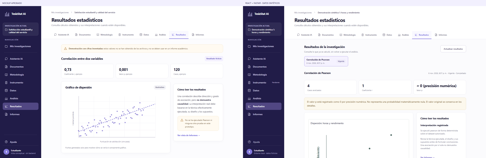
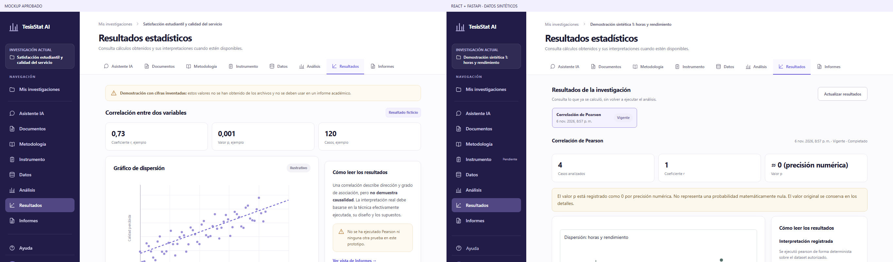
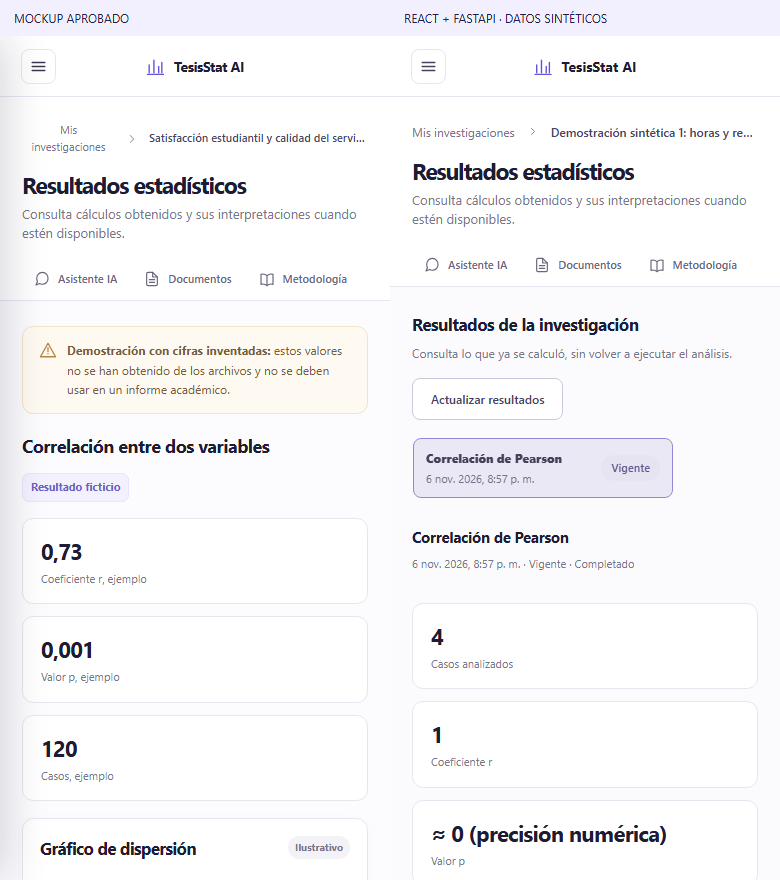
Resumen del análisis de origen y exportación real PDF/DOCX. Se conserva la composición en dos columnas; no se muestra el informe ficticio de la maqueta como previsualización real. No hay archivos exportados persistidos por la API.
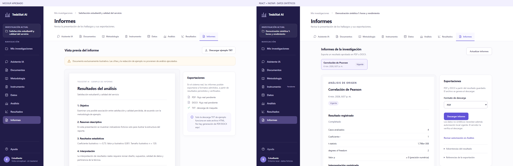
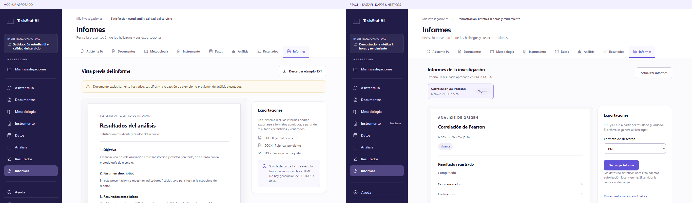
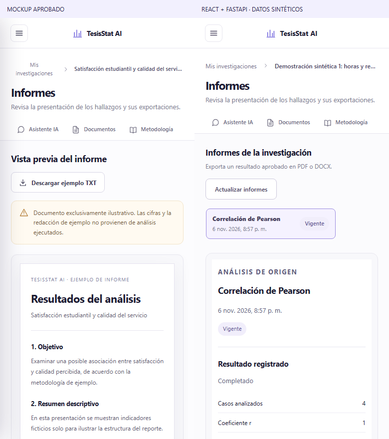
Las siguientes capturas proceden de la aplicación real con una investigación de QA independiente.
Mis investigaciones y Asistente IA se conservaron desde el respaldo ea7cd85. Sus archivos de implementación y estilos aprobados no se modificaron en esta fase; las comparaciones contra ese respaldo usan la misma API y los mismos datos.